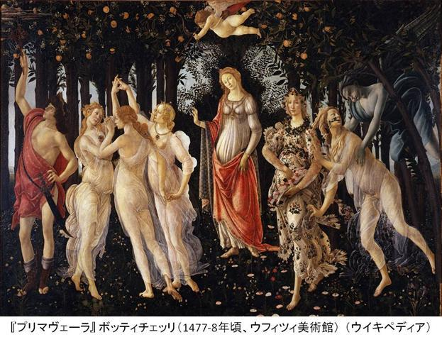
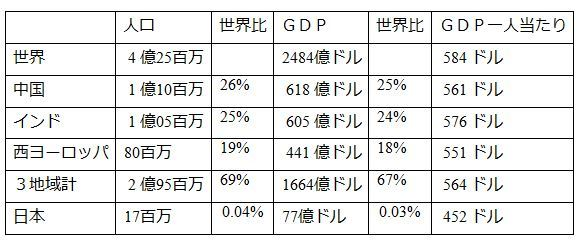
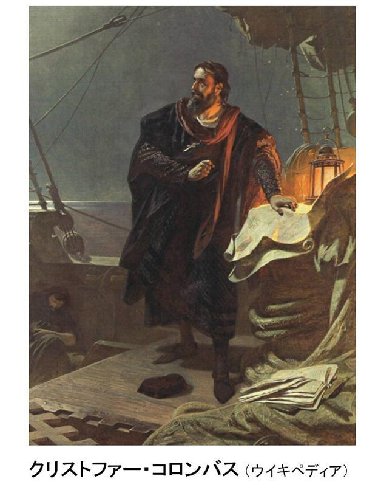
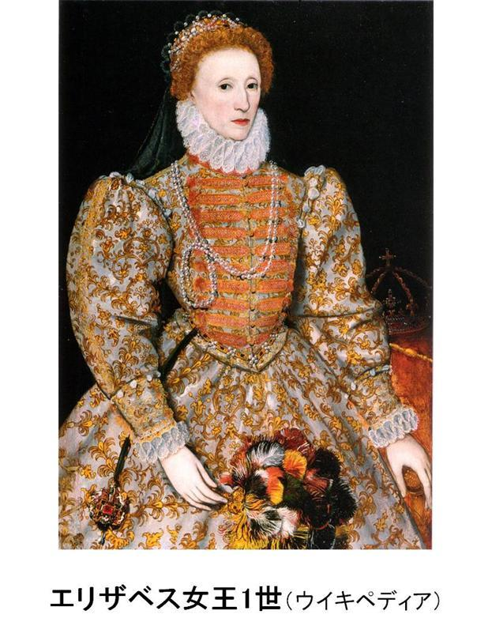
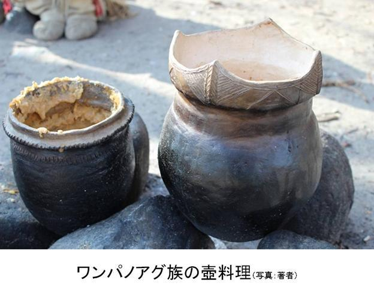

| ②アメリカン・ドリームのルーツ タイユーの走るアメリカ「ヒストリー編」 | |
| 渡辺タイユー | |
| Taiyu Watanabe (2013) | |
はじめに
多くの人たちは、 1776年 7月 4日にそれまでイギリスのコロニー（開拓村）であったアメリカが、本国のイギリスに「独立宣言」をしたのがアメリカの始まりと言いますが、しかし、独立当時すでに 2百 50万人もの人々が 13のコロニーに住んでいましたから、当然ながら、これだけの人たちが突然にアメリカをつくったのではなく、そこにはすでに 150年以上ものコロニーの歴史があったのではないでしょうか。さらには、コロンバスがアメリカ大陸を発見したことで知られるように、ヨーロッパの人たちが何ゆえに大西洋を西に向かって航海し始めたのか、との疑問もわいてきます。こうした、世界のマクロのエネルギーの流れや、何ゆえにイギリスの新世界コロニー政策が北アメリカであったのかとの、ミクロとのつながりを知ることも、歴史を探っていく大きな楽しみではないでしょうか。
そうしてさかのぼっていくと、見えてくるのが「アメリカン・ドリーム」のルーツです。 21世紀に世界大国と呼ばれるアメリカ合衆国。それを支えるのがアメリカン・ドリーム。今回はそのルーツというか、アメリカン・ドリームの始まりを知ることの楽しみになればと筆をとります。
目次
マゼランの世界 1周（ Ferdinand Magellan）
第 1章 21世紀のアメリカの姿
スーパーパワー 超大国アメリカ
1607年 4月、３隻のボートが子供も含めて 105人のイギリス人開拓者を乗せて、 144日間もかけて大西洋を超える航海を終え、現在のバージニア州ジェームスタウンの海岸に到着しました。この人たちが死と隣り合わせの中で、幾多の苦難を超えてアメリカ永住に成功したルーツの人たちでした。その後、 150年ほどたってイギリスからの独立の機運が高まるころには、開拓者の数は何と 2百 50万人にも達し、さらに 250年たった２１世紀初期のアメリカの人口は 3億人を突破しました。
1945年 8月 14日（米時間）、日本がポツダム宣言（アメリカ、イギリス、中国、ソ連）を受諾し、無条件降伏したことによって、第二次世界大戦が終結を迎えました。しかし、時間が途切れずに続く限り一つの結果は次に起きることの起因ですから、第二次世界大戦の終結も、当時の超大国であったアメリカとソ連の戦争、いわゆる「冷戦」のはじまりとなったのでした。しかし、その半世紀も続いた冷戦も、 1991年にソビエト連邦が経済衰退によって崩壊し、アメリカに勝利をもたらしました。以来、アメリカは世界唯一のスーパーパワー (Superpower超大国 )として、２１世紀のリーダーとなったのでした。
スーパーパワーの定義にはいろいろな要素が含まれますが、大きくは経済力、政治力、軍事力、そして文化といわれています。そうした眼でアメリカを見てみると、経済力では、世界一のＧＤＰ。世界の警察と呼ばれるほどの政治外交力。それを支える軍事支出は世界比で 39％で、その膨大な金額によって造られた世界１の機動力を誇る超大型空母、超音速爆撃機、世界最新鋭のジエット戦闘機とミサイル等の、科学技術を結集した軍備。世界のスタンダードユニフォームともいえるような、Ｔ‐シャツ、ジーパン、スニーカー。世界中の街かど見られるマクドナルドのハンバーガーとＫＦＣのフライドチキン。そして世界中のどこにいても、誰とでも情報交換ができるスマホとインターネット。今やアメリカンカルチャーは世界中に浸透し、人々の生活に密着し、ワールド。カルチャーにもなろうとしています。
アメリカン・ドリームの大富豪
こうしてわずか 400年ほどの間に築き上げた、マクロのスーパーパワーもさることながら、世界の人たちがあこがれるのは、人間の無限の可能性と夢を追及することができる、ミクロのアメリカン・ドリームです。歴史のなかでその実例を挙げればきりがないですが、発明王のトーマス・エジソン、ホテル王のコンラッド・ヒルトン、鉄鋼王のアンドリュー・カーネギー、石油王のジョン・ロックフェラーなどは氷山の一角です。
現代のアメリカン・ドリームを成しえて大富豪となった有名人では、大学を中退してコンピューターのプログラマーからマイクロソフトを創設したビル・ゲーツ、フォーブス社によると 2013年の資産 670億ドル（ 6兆 7000億円）。コングロマリットの投資会社バークシャー・ハザエィ創設者のウォーレン・バフェット、 2013年資産 535億（ 5兆 3500億円）ドル。故人ですが世界最大のリテールストアーの創始者サム・ウオルトン、家族保有の資産は 2013年 1157億ドル（ 11兆 5700億円）と、ちょっとした国の国家予算ほどの資産を一代で築き上げている人が沢山います。
ちなみに、過去の歴史的な富豪がどれくらいの資産を築き上げたかというと、たとえば石油王と呼ばれるジョン・ロックフェラーの資産を 2007年の価値に換算すると、何と 6634億ドル（ 66兆 3400億円）（フォーブス 2008年 2月号 ）で、カナダの国家予算にも及ぶほどになり、現代の大富豪より一桁以上も上の数字となりますから「王」と呼ばれることが十分に納得できるのではないでしょうか。（ US 1ドル＝ 100円）
もちろんアメリカン・ドリームは、一代で大富豪となった人たちだけをいうのではありません。アメリカン・ドリームとは、これをしたいあれをしたい、こうなりたいああなりたいと、一見不可能と思えるようなことを実現する、夢のような明日を可能にすることをいうわけです。できないというのは、自分ができないと思っているからできないだけで、できると思った瞬間にその夢は半分達成されたといわれます。
アメリカ初代黒人大統領の誕生
1972年 5月、若干 21才で初めてアメリカ本土の地に足を踏みおろしたのが、ロッキー山脈のふもと、コロラド州デンバーの空港です。ですから筆者にとってデンバーは、トラッカーになって訪れるたびに、若きころを思い出させる想いで深き町です。
2008年 8月 28日の夜、ニューメキシコ州からデンバー北にあるラブランドの町に向かって、フリーウエィの I-25号線を走っていました。その夜は当時上院議員だったオバマ大統領が、民主党の大統領予備選で対抗馬のヒラリー・クリントン氏との大激戦に勝利を収め、民主党大統領候補指名受諾演説を行う日でした。この予備選は、二人の候補者のどちらを選んでもアメリカの歴史上初めてとなる、女性候補対黒人候補ということで、予備選開幕前から世界中の注目を集めていたものです。前日 27日の投票でオバマ氏の勝利決定が報道されていましたから、国民の興味は今夜に予定されていた受諾演説に集中していました。これまでの間にオバマ氏は、大勢の観衆の前で行う名スピーチで予備選を勝ち抜いてきましたから、期待は膨らむ一方でした。会場のインベスコ・フェィールドは、プロフットボールゲームが行われるときに収容できる観客が 7万 6千人ですが、当日に集まったのはなんと 8万 4千人と、キャパシティーを８千人も超える大観衆でした。その夜筆者は、偶然にもオバマ氏のスピーチが始まったころに、会場脇を走るフリーウエィを走っていて、衛星ラジオから実況放送されるスピーチに聞き入っていました。会場の熱気は徐々に徐々に高まり、フィナーレはオバマ氏が高らかに叫ぶ「 Yes we can!」そして会場からも８万４千の大観衆が「 Yes we can!」。オバマ氏と大観衆のシュプレヒコール「 Yes we can!」がロッキーの山並にこだまし、世界を沸かせました。そしてその２ヶ月後の大統領選挙で、国民はオバマ氏をアメリカ初代黒人大統領に選んだのでした。
キャン・ドゥ精神 (Can Do Sprit)
筆者が１８才になって運転免許を取ったときのことですが、公安委員会の一室で免許を渡される前に係官が「自動車は何人も運転してはいけないものであるが、貴方方は特別な訓練を受けて試験に合格し、特殊技能者であることを認められて運転を許可された・・・・」と、事前訓示されてから免許証が渡されました。アメリカの考え方は、車は誰でも運転できるようにつくられていますが、万が一にもその技能を持っていない人がいないように、テストをしますというものです。自動車を、何人も運転してはいけないという考え方と、誰にでも運転できるという考え方には、天と地の差があります。確かに自動車の運転中に、運転者の技量不足で事故を起こすと、怪我どころか場合によっては生命を失いますから、運転が許可されるようになるためには訓練が必要です。しかし、最初からできないと言われながらすることと、かならずできるからと訓練されるのでは、結果に大きな違いがでてくることは、歴然としているのではないでしょうか。アメリカン・ドリームを達成するための第一歩は、この誰にでもできるのだという Can do spritキャン・ドゥ精神と呼ばれる「 Yes I can! Yes you can! Yes we can!」と叫ぶことから始まるのです。
第 2 章 15-16世紀ルネサンス期の世界
黒死病 (Black Death Plague)
ウイキぺディアによると、 1348頃ころ（室町南北朝時代）黒死病と呼ばれる伝染病（ plagueペスト）がヨーロッパで猛威をふるい、 7千 5百万から 2億人もの人たちが死んだといわれています。病原菌は、シルクロードを経由して中国から北アフリカ、中東、そしてヨーロッパへと広がって行ったのでした。菌は、中国からの貿易品と一緒に black rats(クマネズミ )に生息していた蚤によって運ばれてきたであろうといわれています。この伝染病は数年の間に、ヨーロッパの人口が 30‐ 60%も減るという驚異的なものでしたが、短期間にこれだけの人口減をおこしただけではなく、その後の人々の生活に大きな変化を及ぼしました。たとえば、ちょっとした噂だけで暴動が起きるようになり、人々の信頼関係や、町の秩序が失われたり、極端な労働力不足が生じて賃金の高沸や生産活動に低迷が生じたり、知識ある宗教家を失ってその後の布教活動に混乱をおこしたりと、死の恐怖もさることながら、生き延びた人たちの生活のアンバランスから、生きることへの価値観が大きく変わってきます。ローマ法王といえどもなすすべもなく、民衆からの信頼と尊敬を失い、また勢力を急速に失っていく王朝も少なくありませんでした。
こうしたマイナスな半面、労働者が激減したことによって待遇が改善されたり賃金の上昇が起きたりもしました。特に技術を持った人たちはさらなる恩恵をこうむり、伝染病が落ち着いてくると、こうした生活が豊かになった中産階級の人たちが町に依存して生活を楽しむようになり、町人口が増えてきました。

ルネサンス 新たな誕生
このような社会風潮の中で 14世紀から 17世紀（室町‐戦国時代）にかけてイタリアの小都市を中心として「古典文化復興」との精神でルネサンス (Renaissance = rebirth新たな誕生 )と呼ばれる文科革新が起きました。それまでの人々は、神の絶対性を信じてローマ法王に忠誠を誓い、その束縛のなかで生きてきた人々は、黒死病に無力であった法王に眼覚めて、そうした生活からの解放を求めて、古典古代人の人間中心とした自由と合理的な思想と発想に価値観を見直そうとするのでした。そして 14世紀初頭から 16世紀にかけて、わずかな期間にボッティチェリ (画家 )、ドナテルロ (彫刻家 )ブルネレスキ (建築家 )、ブルマンテ (建築家 )、ダビンチ (万能 )、ラフェロ (画家家 )、ミケランジェロ (彫刻家 )等の、巨匠が続出しました。
ルネサンス時代の人々の写真集

ルネサンス時代芸術集

第 3 章 活版印刷の革命
ルネサンス時代には 3大発明と言われる「活版印刷」「羅針盤」「火薬」を筆頭に技術開発が盛んになました。特に印刷技術の発展は、現代のインターネットとスマートフォンの発展があっという間に世界中の人々の生活様式、思想、価値観を変えたように、急速に社会思想を変えていきました。特に当時のキリスト教社会では、それまで手書でコピーしていたために高価だった聖書が、安価で簡単に手に入れることができるようになったために、その解釈論で多くの意見が出てくるようになり、短時間に宗教改革へと大きく発展していきました。そしてルターに代表されるように、多くの指導者がローマカトリック教会から分離して、ルター派、アナバプテスト、カルヴィン派、ツヴィングリ派などの独自のキリスト教宗派をつくるようになり、こうした分離教会派を総称してプロテスタントと呼ばれるようになりました。
ちょっと余談になりますが、無学の筆者がアメリカ中を走る仕事の合間に、こうして歴史の本を簡単に書けるようになったのも、近年の印刷革命ともいえる目覚ましいＩＴテクノロジーの進歩のおかげです。ポケットマイファイでいつでもどこでもインターネットの世界に入って、そこにある無限の知識がいとも簡単に得ることができ、ラップトップと電子出版のおかげで短時間に本として出来上がり、多くの読者に格安で時と場所を選ばずに手軽に楽しんでもらうことが可能になったのです。すばらしき時代に生きていると、つくづく感じる瞬間です。
なぜヨーロッパ人は競ってアジアへ？
またこのころ、マルコ・ポーロの旅行記「東方見聞録」では、アジアには金、パール、香辛料などが豊富にあることが伝えられて、高価な品物が陸路のシルクロードを経由して、イスラム商人によってヨーロッパに持ち込まれて販売されていました。そして羅針盤や大型帆船にみられるように、航海術と造船技術の発達で長距離航海が可能になってくると、ヨーロッパの権力者は、陸路侵略による勢力拡大競争から新航海路開発による、アジア攻略に目が向けられるようになりました。同時に武力者にも多大な影響力をもつキリスト教もアジアへ布教活動に大きく動き出したのでした。
16 世紀の世界経済と人口
次の２表は 1‐ 18世紀ころまでの世界人口とＧＤＰを 1990の世界ドル通貨価値に変換したものです。
これにさらに Southern Methodist University, Dallas TXの当時の人口の資料から、単純計算で割り出した一人当たりＧＤＰの計算をしたのが下の表です。

こうした数字をみてみますと、 16世紀の世界でＧＤＰ一人当たりにそれほどの変わりはないようですが、インドと中国を合わせた人口が世界の約 50％も占めていますから、経済面でも世界約 50％を占めていたようです。ですから、人口も経済もほぼ世界 3位となるヨーロッパの人たちにとっては、イスラム商人を抜いてインドや中国と交易をおこなうことに大きな関心ごとであったと推測されます。特に当時の生活のなかで、食糧保存するための香辛料の価値や中国のカルチャー製品、そして金、銀、宝石、パールなどの装飾品を手に入れることに大きな価値をみいだしていたのではないでしょうか。
第 4 章 新大陸アメリカ
コロンバスの新大陸発見の意義は
ポルトガルは、 15世紀前半からアフリカ西海岸の大西洋沿いの島々に、ポルトガル人を植民させることで勢力を伸ばし、牧畜とサトウキビの生産を行い、航海と商業の拠点をつくっていきました。 1488年には、バルトロメウ・ディアシュがアフリカ南端の喜望峰に達し、西アフリカとの貿易をその南端まで発展させていきました。そしてさらに 1498年にインド洋を横切りインド西海岸のカリカットに到達し、アジアとの海路貿易をすることに成功したのでした。
大西洋開拓に遅れを取っていたスペインの女王イサベルは、当時はありえないと思われていたコロンバスのいだく、夢の大西洋西航路開拓を援助することで、アジアと貿易をすることを試みたのでした。そして 1492年 10月 12日、クリストファー・コロンバス (Christopher Columbus)は、 70日以上も海ばかりの大西洋を航海して、当時新世界 (New World)と呼ばれるようになった現在のカリブ海沖のサンサルバドル島に到達し、アメリカ大陸を発見するのでした。しかしこのとき、そこはコロンバス自身が夢にえがいていたアジアのインドであると信じて、新大陸であることには全く気付きませんでした。そして幸運にも金を手に入れることができて目的を達成することができ、帰国して航海資金援助の返済としてイサベル王女へさしだし、そして先住民の人々を、インドの人ということで「インデアン」と呼んで「インド新航路発見」と報告をしたのでした。
コロンバスの航海の目的が、もしイタリアの地理学者トスカリネ (Toscanelli)が説くように地球が丸いのであれば、インドを南回り迂回して東に向かうよりは、西に向かって大西洋を横切るのがスペインからのアジアへの近道と、信じていたからでした。もちろんその時代のヨーロッパでは、大西洋と太平洋の間にアメリカ大陸が横たわっていることを、そしてその大陸にはすでに先住民族の人たちがすでに住んでいたことは、 10‐ 11世紀に北欧を中心に住んでいて航海術にたけていたバイキングくらいしか知らなかったからです。ではなぜバイキングが最初のアメリカ大陸発見者といわれないのでしょうか？歴史家のなかでは、一つに印刷技術が発展していなかった 10世紀のころには、文字での確かな記録が残されていなかったこと、バイキング自体が北欧でどちらかというと孤立した民族であったこと、さらに、ヨーロッパの人たちにはまだ新大陸への関心がなかったこと、そして、バイキングの新大陸での活動は北のグリーンランド近辺に限られていて、 13-14世紀以降は途切れてしまったことなどがあげられていますが、結論として、彼らの新大陸での生活は世界の歴史やヨーロッパ人の生活に、ほとんど影響を及ぼしてはいなかったからだといわれています。

アメリカと最初に呼んだ人は
コロンバスは、インドにたどりついたと思っていましたからそこに住んでいた先住民の人々をインドの人たちということで「インディアン」と帰国してから報告しました。その後に、いろいろな人たちによってアメリカ大陸の探索がおこなわれていますが、そのうちの一人でイタリア人のアメリゴ・ヴェスプッチ (Amerigo Vespucci)の航海録に新大陸、特に南アメリカのことが詳しくかかれていて、それをもとに 1507年、マルティーン・ヴァルトゼーミュラ ー ( Martin Waldseemüller) が新大陸を紹介する地図を印刷しました。その折に、アメリゴの名前をとって新大陸をアメリカと紹介したのが現在の「アメリカ大陸」と呼ばれる由縁となったのでした。ちなみにコロンバスが目指したヨーロッパからアジアへの西航路の開拓は、 1921年にマゼランが南アメリカの最南端、現在のマゼラン海峡を経由して太平洋を西に横切り、フィリピンに到達して世界一周を行った折に達成されるのでした。
スペインの南アメリカ侵略
コロンバスは 1492年の最初の新大陸への航海の後、さらに 3回の新大陸航海しましたが、いずれもカリブ海近辺だけで、本土の探索は コンキスタドー (Conquistador)と呼ばれる新大陸を征服しようとするスペイン人たちによって行われました。中でも歴史に残るのが、 1521年に現メキシコのアステカ帝国 (Aztec)を滅ぼしたハーマン・コーテツ (Herman Cortez)、 1533年に現ペルーのインカ帝国 (Inca)を征服したフランシコ・ピサロ (Francisco Pizarro)、 1513年にフロリダを植民地としたフアン・ポンセ・デ・レオン、またコルナド (Coronado 1540年 )やデソト (de Soto 1539年 )によって行われた北アメリカ大陸の探索などは、歴史的に有名なものでした。 1800年ころまでのスペインの新大陸テレトリー（領土）は、ポルトガルの植民地をぬいたは南アメリカから、イギリスとフランスのテレトリーを抜いた北アメリカ大陸の半分以上にも達していたのでした。
マゼランの世界 1 周（ Ferdinand Magellan）
マゼランはポルトガル人ですが、コロンバスと同じように大西洋を西に向かう方がアジアへの近道と信じていました。それまでは、アフリカを南回りでアジアから香辛料を運んでいたのですが、西回りのほうが近道で安価に香辛料を手に入れることができるとスペイン王に提案し、スペイン艦隊 5隻と 270人の指揮官として 1519年（織田信長誕生より 15年前）世界 1周の航海に出発しました。南アメリカから太平洋にでるためのマゼラン海峡を発見し、さらに西へ向かい 1521年 4月にフィリピンまで到達しました。マゼラン自身はフィリピンで戦死しますが、艦隊はさらに西に向かってアフリカ大陸の喜望峰を経て 1522年スペインに戻り、史上初の世界一周を成し遂げたのでした。
第５章 アメリカ誕生に向かって
イギリスの新大陸植民地政策
イギリスは、アジアへの西航路開発で発見された新世界における新大陸植民地政策で、スペインやポルトガルに大きく遅れを取ったのですが、その遅れを取り戻す手段としてフランスも行っていた北西航路 (Northwest Passage)の開発にこころみるのでした。 1497年、ジョン・カボット (John Cabot)は、イタリア人ですがイギリス国王に雇われて北大西洋を西に向かって現カナダ北東沖のニュー・フォウンド・ランドに達します。 1524年にはフランス人のジャクェス・カルティア (Jacques Cartier) もニュー・フォウンド・ランドまでは到達しますが、その先へ進むことができなく帰国します。同様な試みが北東航路開発に目を向けられるのですが、ヨーロッパの北を東に向かうには、北極海を覆う氷河は当時の人たちのまえに厚く冷たく立ちはだかり、そしてアメリカ大陸の東海岸は、あまりにも広大な地域に横たわり、この当時としてはこれを超えていくことはほぼ不可能なことだったのでした。
アメリカン・ドリームの種
コロンバスが南大西洋横断に成功してから、単に新大陸への航海だけであればそれほど難しいことではなく、多くのスペインやポルトガルの船が、無事に航海して南アメリカ侵略を成功させていました。北西大西洋横断も北アメリカ大陸の東海岸に到達することだけならば、それほど難しいことではないことがわかってくると、イギリスやフランスは、いっその事アジアとの交易ではなく、新世界との交易の可能性を考えるのでした。とくにイギリスは、民間の資金で植民地開拓希望者を送り、その人たちが生産する交易品をイギリにもって帰り、利益を上げようとこころむのですが、初期のイギリスコロニー開拓に向かった人たちはスペイン人たちと同じように、簡単に金を手に入れて大金持ちになって帰国するか、短期間新世界で労働することによってイギリスでは不可能であった広大な土地を所有することを夢に見て新世界に向かったのでした。
この短期間の労働契約とは、開拓者はイギリスを出発する前にロンドン会社と交わしていた、インデンチュアー（ indenture）と呼ばれる奉公契約をいいます。内容は、時期によって多少の違いがありますが、大きくは、 7年間ロンドン会社のために働くことによって、年季があけるとフリーマンとして自由の身になり、 40-70エーカー（ 16万‐ 28万㎡）の土地を与えられるというものでした。また、希望者がジェントルマン階級であれば、開拓者を守るために鎧と武器を持つことも許されていました。それに対してロンドン会社は開拓者の、渡航費用、 7年間の食事及び日用品の供給、そして自衛をするという内容のものでした。当時のイギリス人にとって、この土地を私有し個人財産にできるということは、命がけの新世界開拓に向かわせるのに十二分な魅力あることでありました。ですから、このことが「アメリカン・ドリーム」の種となったのでした。また、渡航費用を自分で出せる人は 7年間の年季奉公をする必要がなく、最初からフリーマンであると同時に 2‐ 3倍に当たる 150エーカーほどの私有地を得ることができたのでした。
初期の挫折
1578年ギルバート卿 (Sir Humphrey Gilbert)は、エリザベス女王から卿自身の個人資金によるイギリスのコロニー開拓権を得 、 現カナダ沖合のニューファウンドランド島にコローニーを開発しようとこころむのですが、残念ながら失敗に終わり、航海の途中で海のもくずとなるのでした。
ギルバート卿の死後、女王の許可のもとにギルバート卿の異父兄弟となるラレー卿 (Sir Walter Raleigh)が開拓権を継承し、イギリのスコロニー開拓をこころみました。ラレー卿は、ジョン・ホワイトを一行の指揮官として選び、ニューファウンドランド島よりずっと南となる、現在のノースキャロライナ沖にあるロアノーク島を開拓地として選び、一帯をバージンのクイーンにちなんで「バージニア」と名付けました。 114人の開拓者は、 1587年 7月に、ロアノーク島に上陸し開拓を始めたのです。その年の後半、指揮官のホワイトは物資補給のためにいったんイギリス帰国するのですが、再度ロアノークに向けて出発しようと準備している時に、イギリスはスペインとの戦争を始めたのでした。そのためにホワイトは、戦争が終結するまで出発を遅らさなければならなく、 1590にロアノーク島に戻った時には、コロニーはあとかたもなく崩壊してしまっていたのでした。この失敗でラレー卿は多額の資金を失い、バージニア開拓を断念しなければなりませんでしたし、イギリスとしても、数々の失敗と重なる戦争などで 15年もの間、新世界開拓を断念しなければならなくなったのでした。

バージニア・カンパニーと二つのコロニー
1603年 3月 24日エリザベス女王 1世が他界し、当時スコットランドの国王だったジェームス 6世がジェームス１世とあらためて、イギリスの国王となりました。翌年 1604年にジェームス王１世は長く続いていたスペインとの戦争に勝利をもたらし、庶民の間に明るい話題がつぶやかれるようになってきました。そして商人の間では、新世界のアメリカ大陸でのイギリス植民地開拓の構想が復活してき、ジェームス 1世は、 1606年 4月 10日に二つの民間の会社にコロニー開拓権を与えました。 一つはロンドンに所在していたバージニア・カンパニー・ロンドン（通称ロンドン会社）で、現バージニア州を含める南側の地域の権利を、いま一つはプリマスに所在していたバージニア・カンパニー・プリマス（通称プリマス会社）と名付けられ、ハドソン川より北側の現ニュー・イングランドと呼ばれる一帯の権利が与えられました。どちらもジョイント・ストック・カンパニーと呼ばれて、現代の株式会社の起源ともいえる、資本金を譲渡可能な株式を発行し販売することによって資本金を集めるもので、ギルバート卿とラレー卿のように、自らの資本で開拓を試みたのと大きな違いがありました。
第６章 コロニー「生みの苦しみ」
ジェームスタウン (Jamestown)
プリマス会社は、 1607年に最初の開拓者を現メイン州に送りポパム（又はポファム Popham）・コロニーと名付けるのですが、厳しい環境で死亡者が多発し、生存者は 1年で永住を断念して帰国してしまい、プリマス会社の活動も停止したのでした。
同じ 1607年、ロンドン会社の募集した 105人の開拓者を乗せた、ニューポート船長率いるスーザン・コンスタント号、ディスカバリー号、そしてガッドスピード号の 3隻の帆船が、プエルトリコ経由で 5カ月近くの航海をへて、 4月 26日にチェスピーク湾の入り口に到達しました。その後さらに、定住のための農耕が可能で先住インディアンと争いとならないような安全な場所を探してまわり、 5月 13日にジェームス川を 40マイル（ 64キロ）ほど登ったところを定住地と決め、一帯をジェームス国王の町ということで「ジェームスタウン」と名付けて、砦作りを開始しました。しかし、その建設を始めた当初から感じるのは、密かに開拓者の行動を監視するインディアンの存在でした。当時のバージニア一帯にはアルゴンキン語を共通言語とする部族のうち、酋長ポワタンが率いる約 30の小部族 1万 4千人ほどが住んでいたといわれていますが、開拓者の様子に昼夜監視の目を光らせていたのがその中心となるポワタン族でした。開拓者は到着後間もなくから、彼ら以前の開拓者が遭遇したと同じように、新世界定住のために越えなければいけない大きな壁に取り囲まれていたのでした。
少女ポカハンタス
ジェームスタウンはポパム・コロニーよりずっと南に位置するのですが、一行が遭遇する過酷な自然環境はここでも同じでした。一帯は湿地帯で南であるがゆえに気温が高く、飲み水はすぐに腐敗してしまい、夏になると蚊が多く発生するために伝染病が発生し、わずか 6カ月ほどで早くも開拓者の人数が 3分の１に激減してしまいましたし、一帯に住むインディアンとの交戦の不安も募っていくのでした。到着後間もなく、越冬用食糧確保のために植えた作物が大不作で、リーダーであったジョン・スミス (John Smith)は食糧確保のために、この馴染みのないポワタン族と物々交換を試みました。しかし、自らが捕獲されて捕虜となり、酋長のポワタンから死の宣告を受けるのでした。今にもその命が終わろうとしていた瞬間に、酋長の娘ポカハンタス (Pocahontas)は 自分の身をスミスの上にかぶせて、父の酋長にスミスの命乞いを懇願するのでした。ポワタン酋長は愛する娘の願い聞き入れ、スミスを釈放することにしました。ポカハンタスは、この時まだ幼きティーンエィジでしたが、勇気ある行動でスミスを九死に一生の危機から救ったのでした。大自然の中で生まれ育ったポカハンタスには、その自然のなかから生命の尊さをしっかりと学びとり、そして自分の生命をなげうってでも、他人の生命を助ける尊さを実践する勇気を身につけていたのでした。
ポカハンタスは後に、前妻を失って独身だった開拓者の一人ジョン・ラルフと結婚してイギリスへ渡り、リベッカ・ラルフと名前を変えました。ポカハンタスとジョンの結婚は、イギリス人とインディアンの初めての結婚で、二人の間に男の子が生まれました。ポカハンタスは間もなく病気にかかり、推定 21‐ 22際の若さでこの世を去りました。
不運は続く
ロンドン会社が、新世界にコロニーをつくった目的の一つに交易があります。現地の資源や素材を利用して製品を安価に製造したものを、イギリで販売するというものです。幾つかの製品が試されましたが、かなり大がかりに行われたのがガラス加工品でした。食糧や日用生活必需品を送ってもらう見返りとして、コップ、ランプ、皿といったものを製造してイギリスに送り返すというものです。 1608年に春に、食糧補給とあらたな開拓者を乗せた船が到着し、その中にドイツ人とポーランド人のガラス工芸職人がいて、ガラス制作所がつくられました。その年と翌年にかけて試行錯誤を繰り返しながら、ガラス製品制作に励みましたが、他の製品はなかなかうまくいきませんでした。開拓村では、慢性の食糧不足と伝染病が流行ったことで、で補充された開拓者もすぐに命を失い、またもや労働者力不足となりました。
さらなる開拓者が到着するが
1609年に、９隻のの船舶からなる第 3次補給船隊がバージニアコロニーに向かって大西洋に乗り出したのですが、途中で大嵐と遭遇してばらばらになってしまいました。激しく浸水する新造船のシーベンチャー号と他の 1隻は、現バミューダ諸島を見つけ、船長のジョージ・サマーズはサンゴ礁に船を乗り上げて沈没を防ぎ、 150名の命を救ったのでした。残りの 7隻は無事にジェームスタウンに到着することができたのですが、越冬のために準備した食料は、はぐれてしまったシーベンチャー号に積まれていて、やっとのことでジェームスタウンにたどりついた喜びもつかの間、一行の到着で開拓者の数は 600人近くにも増えるのですが、越冬のための大食糧不足という危機に直面するのでした。この冬は 「飢えの時 (Starving Time)」と呼ばれて、伝染病と飢えのために翌年の春まで生き延びた 開拓者はわずか 60人ほどでした。
救いの軍団
一方サマーズ船長率いるバミューダ諸島に到達した一行は、シーベンチャー号ともう１隻の残骸から小型の船 2隻をつくり、 10か月をかけて翌年 1610年の春に、ようやくジェームスタウンに到着ことができたのでした。しかしそこで見たのは、長い冬の間生死の境をさまよいながらもやっと生き残っていたわずか６０人ほどのやつれきった開拓者の姿でした。到着したサマーズ船長一行も、途中の難破で食糧をほとんど失っていましたから、この一行も、ジェームスタウンに到着すれば食糧が豊富にあるであろうことに全てを賭けていたのでした。しかし想像もしていなかった現状を目にして、生存者と一行はコロニー延続をあきらめ、イギリス本国へ帰る決意をしたのでした。そして、ジェームスタウンを後に大西洋に向かってジェームス川を下り、チェスピーク湾に差し掛かり、大西洋にのりだそうとしていたその時、大きく帆を張り上げた、大帆船団が目の前に現れたのでした。それは、ロンドン会社によって編成されたトーマス・ホワイト（後にデラウェア卿として知られる）率いる第 4次補給船隊でした。ホワイトは豊富な食料と引き換えに、帰国しようとする開拓者にコロニーにとどまることを命じたのですが、この命令が、ジェームスタウンが新世界でイギリスの最初のコロニー として定住を成し遂げるための 歴史的な 出来事となったのでした。
カマン・ストアー（ Common Store 共有ストアー ）
ジェームスタウンでは開拓者の食糧と生活必需品が「カマン・ストアー」を通じて平等に配給されることになっていましたから、英国からの補給が十分にあれば食糧難には至らなかったのでしたが、ある程度の食糧は自給自足で行うことが前提でした。開拓者は、本国イギリスにガラス高原品のなどを生産しなければいけないことと同時に、食糧確保のための農業作業も義務付けられていましたので、開拓者として参加する折に納得して契約を結んでいた人たちなのですが、開拓村での実際の生活が始まってみると、働いても働かなくてもカマン・ストアーから食量が与えられますから、労働を怠ける人たちばかりでした。蓄えの食糧はすぐに底をつき、自作の農作物で補給しようにも、畑から取れる作物量は自給するにはほど遠いわずかな量でした。野生の動物を得るための銃があってそれで狩猟に出かけても、準備してあった釣り道具を持って魚釣りに出かけても、得たものは全てカマン・ストアーに供出することが義務付けられていて、開拓者全員に分配しなければいけませんでしたから、誰も必要以上の努力をしようとはしなかったのでした。
アメリカン・ドリームのルーツ
ケイトー研究所 /財 団の デービッド・ボアズ（ David Boaz executive vice president of the Cato Institute）によると 1609年までにはゆうに 500人にもの開拓者がいながらその半年後にはわずか 100人しか生き残っていませんでした。生き延びるためには、飼っていた犬、猫、ネズミなども食糧としたどころか、隣人の遺体や、妊娠している妻を殺してまで食糧にしていたとの記録が残っているほど生き詰まった状況でした。
この「餓鬼の時 starving time」の 1年後に新しいガバナー（ governor管理者・知事）としてトーマス・デール（ Thomas Dale）が赴任してきました。ガバナーとは、ガバーン (govern制御 )をする人という意味で、組織を統制や管理する人とか組織の長といった意味です。近年のガバナーとは、州を統制する州知事をさして言いますが、コロニーでのガバナー職は、本国イギリスの管理地を管理する職ですが、地域としての役割はそれほど重要でもなく、開拓者の人数も少なかったですから、コロニー長とか管理長といった責任者程度の意味が適当かと思います。ガバナーは、デールのようにイギリス本国から役人として任命される場合と、開拓者が選挙で選ぶ場合があったようです。
ちなみに、国を運営する組織をガバメント（ government）と呼び、日本語では政府あるいは国家といった意味でつかわれますから、大きな意味では国家の首長である大統領や首相も、国を統制する人と言った意味でガバナーと呼ぶことがあります。
デールが初めて開拓村の様子をみて驚いたのは、契約通りの仕事をしているべき開拓者が、路上でボーリングをして遊んでいる光景でした。そこでデールは、開拓村の大改革を行うことにしましたが、その中でも最大の効果を発揮したのは、 3エーカー（ 12,138㎡）の個人土地耕作を許可したことでした。開拓者はただちに個人農園をつくり、好きな農産物を自由に生産始めたので、カマン・ストアーが供給しなければいけなかった食糧の量が急減していきました。それはロンドン会社の負担を激減させただけではなく、開拓者同士が余剰作物の物々交換を始めたのでした。そしてその物々交換は、作物だけに限らず日用雑貨品へと発展していくのですが、そうすると、開拓者村の限られた素材を利用してより効果的な耕作や日用品の生産への創意工夫が高まり、物流が急速に高まるのでした。
そのような明るい兆しが開拓村に見えてきたころに、ジョン・ラルフはコロニーからイギリスへの生産品として、バミューダから持ってきたタバコの栽培を奨励しました。ジェームスタウンで栽培するバミューダ系のタバコの味と香りは、イギリスで大評判となっただけではなくヨーロ‐パの各国へと広まっていきました。それは、すぐにロンドン会社の主要利益品となったばかりでなく、その後に続くバミューダ州の発展に大きく貢献することになったのでした。
新ガバナーとなったデールが行った、わずかながらもの土地の個人所有というインセンティブは、それまでの働いても働かなくてもカマン・ストアーを通じて分配される報酬は同じという経済体系（共産）から、自分の創意工夫と努力で利益を高めることができ、その価値は物々交換（市場）によって開拓者同士が自由に決めるという、今日のアメリカが率先する自由競争市場経済「アメリカン・ドリーム」の始まりとなったのでした。同じ人間が生きて行くのに、働いても働かなくても報酬は同じという共産制の場合と、された努力に対して報酬増大というインセンティブが与えられた場合とでは、毎日の生きる努力が 180度違ってくるものと歴史は語っているのではないでしょうか。
第 7 章 2つめのアメリカ誕生
ヨーロッパ宗教革命
16世紀（中世末期、日本戦国時代）のヨーロッパでは、印刷技術の発達で多くの聖書が人々の手に渡り共通した内容でキリスト教の解釈をすることができるようになりました。それまでの聖書は手書でコピーだったために数がすくなく、ごく限られた人々だけに読まれて解釈されていただけで、信者はそうした聖職者のキリスト教解釈に疑問を持つ余地がなかったのでした。しかし、大量にコピーができる印刷技術の発展で、多くの人が聖書を読めるようになると、ローマ教皇を首長とする教会のキリスト教解釈や教会体制に対して、大きな疑問を感じるようになってきました。それを表面化しヨーロッパの宗教改革となるきっかけをつくったのが、ドイツ人神学教授のマーティン・ルターでした。
当時カトリック教会は、罪の償いはお金でできるとのことで、贖宥状（ Indulgenceしょくゆうじょう）と呼ばれる免罪符を発行して教会の収入にしていたのでした。しかし ルターは、償いは神に告白（ Confession）することによってなされるものであるとの解釈のもとに、 1517年 11月 1日、ヴィッテンベルク大学の聖堂の扉にもその旨を記した紙『 95ヶ条の論題』を張り出し意見交換を呼びかけました。そして、聖書をキリスト教の唯一の源泉にしようというルターの影響下で、福音主義教会（ルター派教会 ） が形成され、 プロテスタント（ Protestantローマカトリック教会に対して"抗議"の意）教会の源流ができ、宗教改革 が ヨーロッパ中に広がっていったのでした。
イギリス国教会
イギリスはもともと、西方教会のローマ教皇（または法王 Pope）を中心とするカトリックの国でした。しかし 1527年にヘンリー 8世は、妻キャサリーン（ Catherine）王妃との離婚を願い出たのですが、ローマ教皇に認められなかったことが原因で、イギリス国教会を独立させました。 1534年には国王至上法（首長令）を公布してローマ・カトリックから分裂し て 、イギリス国王はイギリスの統治者でありイギリス国教会の首長でもあることを宣言したのが始まりでした。
ヘンリー 8世は、首長として教会の財産をも国有化できる権利もあると考え、修道院が保持していた財産を国有化してしまいました。それゆえにイギリスの修道院は、破壊され、荒廃していったのでした。
ピューリタン（ Puritan 清教徒）
こうしてヘンリー 8世の王制で始まったイギリス国教会ですが、ルターに始まったヨーロッパの宗教改革を知り、プロテスタントに影響されたイギリス人の中には、イギリス国教会の腐敗したあり方にも批判を持つ人が増え、ルターのように聖書の原点に戻って腐敗した教会を清めようとの運動が高まってきました。そして、そうした人たちを「ピューリタン」と呼びました。初期のピューリタンは、大きく二つに分けられていました。一つは「長老派」と呼ばれていますが、イギリス国教会内から働きかけて清めて行こうとする人たちで、もう一つは「分離派 Separatists」と呼ばれて、イギリス国教会から分離して聖書に基づいて信仰を続けて行こうとした人たちでした。この分離派の人たちが 1620年にメイフラワーに乗って新世界で自分たちの安住の地をつくることを目指して、アメリカに 2つ目の開拓村をつくることに成功したのでした。彼らは、「ピルグリム・ファーザーズ」とも呼ばれています。
ピルグリム・ファーザーズとは
ピルグリム（ Pilgrim）とは狭義で「巡礼者」と訳され、宗教上の理由から四国遍路のように聖地巡りをする人たちを意味します。広義では、どこかに聖地があることを信じて、その見知らぬ聖地を求めて旅する人たちを意味します。モーゼに率いられて、聖地を求めてエジプトを脱出したユダヤ人もピルグリムですし、暴徒から逃れるためにそれまで住んでいたイリノイ州ナブーを捨てて、安住の地を求めて西へ西への旅にでたモルモン教徒の人たちもピルグリムと呼ばれます。ファーザーズとは、「父祖」または「始祖」と訳され、最初に歴史的偉業を始めた人たちを意味します。 1776年 7月 4日に、独立記念館で独立宣言にサインをした人たちも「ファウンディング・ファザーズ（ Founding Fathers）」建国の父と呼ばれます。ピューリタンの人たちは、自分たちの信仰を元にアメリカに理想の地を築き上げるために開拓者として渡って来、それを成し遂げたことから「ピルグリム・ファーザーズ」と呼ばれるのです。
ピューリタンへの弾圧
ヘンリー王 8世が、ローマ・カトリック教会から独立してつくったイギリス国教会の腐敗を批判するピューリタンは、王からの弾圧を受けることになるのですが、 1559年に即位して間もないエリザベス女王 1世は、ただちに「礼拝統一法」を発令し、イングランド国教会を国家の主柱として位置づけ ました 。 この法はピューリタン分離派のように、日曜日にイギリス国教会に礼拝に来ない者には罰 金を科するというものでした。こうし た弾圧は、 1567年にジェームス王 1世が即位してからさらに強化され、 1,600年代になると投獄さえされるようになりました。こうした弾圧を逃れるために、 1607年にピューリタン分離派のリーダーだったウィリアム・ブルースターは、自宅に集まるメンバーを率いてオランダへ亡命をして、宗教活動を続けるのでした。しかし、なれないオランダの生活は教会のメンバーにとって苦労の多い日々でした。
当時のオランダは、スペインと 12年間の休戦協定を結んでいましたから、ブルースターを中心とするイギリス人ピューリタン亡命者も安全でしたが、協定が切れる頃になると亡命者の間に大きな不安が生じてきました。そうした将来の不安を解消するために、安全な定住地を求めてブルースター一行は自分たちがイギリス人でいることができる、北アメリカのイギリス開拓村に移住することを決意するのでした。
第 8 章 メイフラワー号
ブルースターをリーダーとするピューリタンの人たちは、自分たちの理想の地を求めて北アメリカのイギリス開拓村に移住することを決め、早速の準備にかかるのでした。その準備委員の一人に、当時 27歳の若きウィリアム・ブラッドフォードがいました。ブラッドフォードは、新大陸への旅に始まって、開拓村での生活の記録を細かく書き綴っていて、歴史家にとって当時のことを知る最も貴重な参考資料とされています。またブラッドフォード以外にも、ピューリタンの人たちは日記を書き残した人が多いため、アメリカの初期開拓村のなかで、一番記録が多く残されているとも言われています。
苦難の始まりは
1,620年 7月 22日ブルースターを長老とし、若きブラッドフォードをリーダーとする 66名のピューリタンが、第 1陣としてわずか 60トンのスピードウェル（ Speedwell）号に、翌年までの食糧や日用品を積みこんで、イギリスのサザンプトン港でメイフラワー号と合流のために、オランダに残るピューリタンの同胞に別れの言葉を交わし合いました。当初の予定では、ピューリタンが乗っているスピードウェル号と、一般募集された開拓者が乗船しているメイフラワー号の 2隻で大西洋を越え、すでに開拓村として有名になっていたジェームスタウンをさけて、より北のハドソンリバー近辺を開拓することになっていました。ちなみに、ピューリタンの人たちは自分たちのように宗教上の理由から新世界に向かうのではなく、一般募集された開拓者を「よそもの Strangers」と呼んでいました。
サザンプトン港でプリマス会社から見せられた正式な契約書をみると、ピューリタンの人たちが事前に合意していたはずの、個人の家や私有開墾地などの私的財産所有が認められておらず、 7年の年季の間の利益は全てプリマス会社のものとなるように書かれていたために、ピューリタンの人たちは契約書にサインすることを拒否しました。自分たちの夢を叶えるために新世界へ向かう命がけの航海に先駆けて、重要な契約内容に大きな食い違いがありながらも出発しなければいけなかったことは、その後にピューリタンの人たちが遭遇し乗り越えなければいけなかった、幾多の困難の最初の出来事だったのでした。
スピードウェル号浸水
8月 5日、 2隻の船は新世界に向けて出発するのですが、わずか 100海里ほど航海したところで、スピードウェル号が浸水にみまわれ、修理のためにダートマス港に引き返すことになりました。この時代でもすでに、秋を過ぎると大西洋は冬の大嵐が頻繁に発生して、船が難破する危険をともなうことがよく知られていましたから、修理のために出発が遅れることは、航海の危険を大きく高めることになるのでした。
2週間ほどの修理期間であらためて出発しますが、船長はまた浸水しているとのことでプリマス港に引き返すのでした。そしてさらなる難題は、プリマス港に戻ったあと、船長は再度の出発を拒否したことでした。急遽開拓者はメイフラワー号 1隻で新世界に向かうことにし、スピードウェル号に積んであった食糧や日用品をメイフラワー号に積み替えることに専念しました。そのためにさらに出発が遅れ、 9月 6日にやっとメイフラワー号は出発すことができたのですが、いくらメイフラワー号が大型船であったとはいえ、わずか全長 30数メートルで 180トンほどの船でしたから、総勢で 102人の開拓者の越冬用の食糧と日用品、船長以下 50人前後のクルーの往復 1年あまりにもなろうという航海の食糧で、乗船者は足を延ばして寝ることもできないほどに、人と荷物が昆積された船内で長い航海をしなければならなかったのでした。
陸だ！陸だ！
1620年 11月 9日、甲板から「陸だ！陸だ！」の叫び声が響き渡りました。プリマス港を出てから 66日目、幾度かの冬の大嵐を乗り越えてついにメイフラワー号に乗っていた開拓者は、新世界の大陸を自分たちの眼で見ることができたのでした。そこは、目的地のハドソンリバーよりもずっと北になるコード岬の近くでしたが、この季節にハドソンに南下するには、潮の流れが激しく交り合う危険極まりない難所を越えていかなければなりませんでした。そこで船長は一行の安全のために、岬の最先端になる現在のプロビンス近辺に上陸することを決め、 11月 13日に定住地を探す調査隊を上陸させたのでした。最初の調査で、近辺はインディアンの墓と地下に埋められていたコーンを見つけ、そのコーンをメイフラワー号に持ち帰りました。 2回目は、連日の悪天候に見舞われながらも調査を続けるのですが、インディアンが自分たちを見張ていることを感じただけでした。 12月 6日に 3度目の調査に上陸するのですが、インディアンとの最初の遭遇が起き、銃を発砲することになるのでした。メイフラワー号は、その後のインディアンとの争いを避けるため、ケープ岬から湾の内部へと向かい、 12月 16日現在のプリマス近辺に再び調査のために上陸しました。調査隊は 3日ほどかけて一帯を探索し、インディアンが放棄してしまったと思われる パチュケット（ Patuxet）と呼ばれる一帯を 定住地と決めました。そこは、 2つの丘に挟まれていて、自然の地形が防衛に適していることと、農作を行った跡があって農業を始めるのに簡単であったこと、そして近くに新鮮な水が豊富に流れていたことが理由で決められたのでした。
過酷なプリマス開拓村での越冬
プリマスのパチュケットに定住を決めた開拓者は、クリスマスを祝う間もなく住居の建設に取りかかり、少しずつながらも荷物を陸揚げし、陸上での生活を始めました。しかし、雪が降る寒い冬のプリマスの気候に遭遇した開拓者は、長い船上での塩漬けになった食糧ばかりの生活で栄養が偏ってしまったことと、せまい船底で冬の嵐の航海に体力を使い果たしてしまったことで、次々と命をなくしていくのでした。数か月後の春を迎えたときには、わずか 53人の開拓者と半数のクルーしか残っていませんでした。
そうした、毎日のように仲間が病気で死んでいくのを見とどけながらも、年明け間もなくに共同倉庫を造りあげました。しかし、必死の努力で完成させた倉庫でしたが、火事になってしまったり、大工道具を盗まれたりと、常にインディアンに取り囲まれていることを感じさせられていました。そこで開拓者は、自衛のために丘に大砲を設置し、武装した自衛団を編成するのでした。
第 9 章 春の訪れ
冬の寒さの中で、病気とインディアンとの抗争の不安を感じさせる緊張の日々を過ごしてきたプリマス開拓村にも、雪が融けはじめて、暖かい春の訪れを感じさせるようになったある日、畑の中を一人まっすぐに自分たち向かって歩いてくるインディアンがいました。そして、近くまで寄って来たインディアンの口から力強い声で「 Welcome！ ウエルカム（ようこそ）」と開拓者を歓迎する英語が発せられたのでした。名前は「サモセット」と言い、これまでに近辺を訪れていたイギリス人漁師や毛皮を求める猟師から、片言の英語を教わったとのことでした。
インディアンとの交流
サモセットは開拓村で一晩すごし、開拓者にこの近辺のインディアン部族のことをいろいろと教えてくれました。一帯に住んでいたのはワンパノアグ族（ Wampanoag）で酋長の名前はマサソイト（ Massasoit）と呼ばれていました。ワンパノアグ族は、現マサチューセッツ州南東部からロードアイランド州にかけて住んでいた、 50ほどの小部族の連合で、アルガンキ語を言語に属するマサセット語を話していました。サモセット自身は、ワンパノアグ族が住んでいる地域よりももっと北の、現メイン州に住んでいるアベナキ族の小酋長でした。アベナキ族は、アルガンキアン言語に属するマサチューセット語を話していましたから、同じマサチューセット語を話すワンパノアグ族とも会話をすることが可能で、今回もマサソイト酋長を訪れにいく途中だったのでした。そこで開拓者は、サモセットにワンパノアグ族との平和な交流の仲介を委ねるのでした。
数日後の 3月 18日に、サモセットは 5人のワンパノアグ族と一緒に戻ってきました。ワンパノアグ族は、開拓者がコーンを盗んだ事を問い詰めると、開拓者はそれに対して代価を払うことで和解し、ワンパノアグ族も盗んだ大工道具を返却しました。そして、自分たちが持ってきた価値ある毛皮を開拓者が持っている食器などと物々交換することで、平和な交流を始めることができたのでした。
それから間もなくの 3月 22日には、ワンパノアグ族酋長のマサソイトが 60人の部族を従えて開拓村にやって来ました。開拓者は、マサソイト一行に最高の礼をつくすため、太鼓とトランペット、そして銃砲による儀式で迎えました。マサソイトは通訳としてスクァントを従えて来ました。スクァントは略奪されて、イギリスに連れていかれたのですが、働きながら英語を学び、再びアメリカに戻ってきたのでした。
当時のワンパノアグ族は、近辺に住む他のインディアンに襲撃されることが発生していました。また、ヨーロッパ人との接触による伝染病の感染で、部族の人口が激減していたのでした。マサソイト酋長は、銃を持っている開拓者と連合を組むことで他部族インディアンから部族を守ることと、自分たちが持っている毛皮を、開拓者の日用品と物々交換して利益を上げることを望んでいました。スクァントの通訳のおかげで、開拓者はマサソイトと互いの共存を援助しあうことで合意し、平和協定を結ぶことができたのでした。

スクァントの援助
平和協定が結ばれた後、スクァントは開拓者と一緒に生活し、コーン栽培の仕方、漁の仕方、そして日常生活のいろいろなことを開拓者に教えてくれました。後で知ることですが、開拓者が定住に選んだパチュケットと呼ばれる一帯は、スクァントの一族が住んでいたところでしたが、スクァントがイギリスに略奪されていた間に、ヨーロッパ人が持ってきた伝染病で全滅してしまっていたのでした。それがゆえに、一族の土地に定住しようと働く開拓者に、血を分けあった肉親のような親しみを感じ、いろいろな手助けをしてくれたのでした。そのスクァントのおかげで夏を乗り越えた開拓者は、秋に恵みの収穫を得ることができたのでした。そんなある日、開拓者が予期せぬ収穫に感謝をこめて祈りを捧げているところへ、マサソイトが 90人もの部族を従えて訪ねてきました。開拓者は収穫の喜びを分かち合うために、早速マサソイト一行と食事を分かち合い、 3日間ものあいだ歌や踊り、またゲームなどをして、ともに楽しんだのでした。ワンパノアグ族は得意の弓と矢で、近くにいた鹿を 5頭も射止めて開拓者に返礼をしました。こうして互いに食糧を分けあって、自然の恵みに感謝をしたのが感謝際のはじまりといわれています。
第 10 章 自由民主主義と自由市場経済
1607年に始まるジェームスタウンコロニーは、苦難を乗り越えながら自力で永住することに向かって歩き始めました。 7年間の年季奉公中でも、３エーカーの私有地耕作が認められると、自給率が急速に高まり、さらにジョン・ラルフの提案したタバコ栽培が利益の高い生産物であることが実証されると、コロニーの未来に明るい日差しがさしてきました。わずか 105人で始まったコロニー人口は、幾度も補充されながらも 10年ほどの間、数百人前後の時代が続くのでしたが、 1918年ころからタバコ栽培が活発になると同時に急速な人口増加がはじまり、メイフラワー号がプリマスに到着した 1620年頃には、何と 1,400人ほどにもふくれ上がり、さらにその 10年後には 2,500人ほどまでになったのでした。
初めての議会
1619年 7月 30日には、民衆選挙で選ばれた議員によって初めての議会が開かれました。開拓者は出発前の契約で、 7年の年季を終えるとフリーマンと呼ばれる自由の身となり、そして土地を所有することが許されていたのと、選挙権が与えられて自分たちで自治をおこなうことが認められていて、それが初めて行使されて民主議会が開かれたのでした。そしてこれが、 1776年のアメリカ独立に大きな影響を与えた「バージニア州議会」の始まりとなったのでした。
プリマスでは
1628年ころから、プリマスから 50キロほど北のボストン湾を中心としてマサチューセッツ・ベイ・コロニーが発展し始めました。プリマスコロニーの成功を知って、多くのピューリタン開拓者がこのマサチューセッツ・ベイ・コロニーを目指してやってきたのでした。 1630年代になると「 Great Migration 大移民 」と呼ばれるのですが、人口が 2万人にも増え、ジェームスタウン・コロニーの 10倍以上の規模となったのでした。ちなみにハーバード大学が設立されたのもこのころの 1636年でした。
メイフラワー号に続いて、開拓者が続々とプリマス一帯にも渡って来るのですが、 初期のプリマスコロニー自体の人口は、それほど急激な増加を示してはいませんでした。記録によると、メイフラワー号到着から 10年たった大移民の 1630年でもわずか 300人ほど、 1643年になってやっと 2,000人ほどでした。
プリマスの政治と宗教
こうしたマサチューセッツ・ベイ・コロニーに移民してきたピューリタンの開拓者は、率いる各教会のリーダーによって統制がとられていましたが、コロニー全体としてはフリーマン（自費で来た人、または 7年の年季をおえた人たち）による、選挙によって民主的に議員が選ばれることが契約で決められていて、牧師などのように聖職にある人は、議員になることも禁じられていました、がしかし現実には、重要案件の決定はこうした聖職者のリーダーによっておこなわれていました。
現代民主主義や権利と義務はこのころから
新世界のアメリカ大陸には、ジェームスタウンとプリマスの二つのコロニーの二つが、 17世紀初期（江戸時代初期）に誕生しましたが、イギリスからの開拓者はそのときすでに、
・開拓者には自治権が与えられていた。
・土地や家など財産（ Property）の私有権が与えられていた。
・銃を持つ権利が与えられていた。
・コロニーを守る義務があった。
などの、アメリカの現代にまで継承されている人間と社会の基本権利と義務が与えられていました。さらに、
・議会と宗教は切り離すべきこと
・宗教と個人の信仰は自由であること
の思想も持っていた人たちも多かったのですが、相対する意見を持っていた人たちもいたわけで、こうしたことはコロニーの成長と時代の流れのなかで、常に議論されていくことなのでした。
おわりに
コロンバス以前の南アメリカでは、インカ文明やマヤ文明などでみられるように、高度な建築技術や支配制度をすでに持っていましたが、 1492年にコロンバスが新世界発見をしてから、スペイン、ポルトガル、イタリア等の他ヨーロッパ諸国に制覇されてしまいました。その大きな理由は、南アメリカの人たちが豊富に産出される「金」を崇拝し、それを加工する技術をもっていたからでした。そのために、金を目当てに大西洋を越えてやって来たヨーロッパ人に、すでに住んでいた人たち Indigenous Peopleは制覇されてしまったのでした。
それから 1世紀以上も過ぎた北アメリカでは、イギリス人が民間主導で定住を試みるのでした。初期の開拓者は、北アメリカにも南アメリカと同様に、金が簡単に手に入ることを夢見て大西洋を越えて来たのでしたが、金は容易に見つからず、インディアンとの争いや、冬の厳しい気候のために失敗が重なるのでした。 1600年代初期になって、ジェームスタウンとプリマスでやっと定住が始まるのですが、いったん始まった定住の根は見る間に大きく延びていきました。そしてわずか数世紀後に、アメリカは世界のスーパー・カントリーとまで成長しました。
金を簡単に手に入れることができたスペイン人たちの南アメリカ侵略ブームは、金を略奪しつくすとほぼ終局となりました。しかし、初期に金をみつけることができなかったジェームスタウンやプリマスの開拓者のミクロの努力は、かわりに北アメリカを制覇するという、マクロな無限の価値を得ることになったのでした。
イギリス人開拓者も、あわよくば金を簡単に手に入るのではと思っていたものの、現実には、アメリカン・ドリームのルーツとなる土地の私有権というインセンティブにモーティベートされて命がけで渡ってきたのでした。しかし北のプリマスと南のジェームスタウンでは、その始まりから遭遇した環境と個々の開拓者の描く夢に、大きな違いがありました。そして、 1630年頃から急速な人口増加が始まると、おのずからそうした環境の違いによって、個々に直面するミクロの難題も、またそれに対する対応の仕方も違っていました。しかしながら、そうしたジェームスタウンとプリマスのミクロな解決策の違いがありながらも、マクロな結果として 150年後のアメリカの独立思想をつくり上げることになったのでした。次編では、そうしたコロニーの難題の経緯を見ながら、アメリカ独立思想への生い立ちを書ければと思っています。お楽しみに。
著者略歴
1950年 北海道旭川市生まれ。
1972年 千代田テレビ技術学園航空電子科卒。パイロット免許習得のため渡米。
1972年 米国コロラド州グリーリー市 エミリー・エビエーション・スクールにて、プライベ ート・パイロット・ライセンス習得。
1974年 米国フロリダ州マイアミ バーンサイド・オット エビエーション・スクールにて、 コマーシャル・パイロット・ライセンス・陸上双発・計器飛行証明習得。
1974年 米国ネバダ州ラスベガスのシーニック航空入社。副操縦士兼東洋地区担当営業マネ ジャー。
1983年 ラスベガスをベースに、日本人旅行者を案内するバケーションツアーズを設立。
1984年 米国籍習得。
1989年 オリジナル大自然めぐりツアーバスを運行。
2001年 ９・１１同時テロ発生で日本人旅行者が長期にわたり渡り激減し、ビジネス閉鎖。
2005年 タクシードライバーから長距離トラック・ドライバーに転職。
著者 渡辺タイユー
発行人 渡辺タイユー
編集 渡辺タイユー
発行所 渡辺タイユー 9640 Withering Pine St. Las Vegas, NV 89123 USA
2013年 11月 25日初版発行（Ｖ 1.0）
著者ブログサイト
アメリカン・トラック野郎 タイユーは走る
http://blogs.yahoo.co.jp/taiyuusa
idriveusa@gmail.com
寄稿雑誌 ベストカー
トラッカーマガジン「フルロード」
http://fullload.jp/index.php
References
United States
http://en.wikipedia.org/w/index.php?title=United_States&oldid=567256787
US Bureau of the Census
US Constitution
http://www.archives.gov/exhibits/charters/constitution_transcript.html
Continental Congress
http://en.wikipedia.org/wiki/Continental_Congress
Population history of indigenous peoples of the Americas
http://en.wikipedia.org/wiki/Population_history_of_indigenous_peoples_of_the_Americas
超大国
http://ja.wikipedia.org/w/index.php?title=%E8%B6%85%E5%A4%A7%E5%9B%BD&oldid=48015244
冷戦
http://en.wikipedia.org/wiki/Cold_War
Gross world product
http://en.wikipedia.org/w/index.php?title=Gross_world_product&oldid=560567511
List of countries by military expenditures
http://en.wikipedia.org/w/index.php?title=List_of_countries_by_military_expenditures&oldid=567263588
World's Billionaire Forbs 20013
http://www.forbes.com/billionaires/list/
Walton family
http://en.wikipedia.org/w/index.php?title=Walton_family&oldid=567110182
http://10rank.blog.fc2.com/blog-entry-170.html
Colony of Virginia
http://en.wikipedia.org/w/index.php?title=Colony_of_Virginia&oldid=565239081
London Company
http://en.wikipedia.org/w/index.php?title=London_Company&oldid=580307943
Jamestown, Virginia
http://en.wikipedia.org/w/index.php?title=Jamestown,_Virginia&oldid=581496092
Indentured servant
http://en.wikipedia.org/w/index.php?title=Indentured_servant&oldid=581481984
List of government budgets by country
http://en.wikipedia.org/w/index.php?title=List_of_government_budgets_by_country&oldid=567141141
The world population
About.com
http://www.about.com/#!/browse-categories/
Population history of indigenous peoples of the Americas American Indian Population
http://en.wikipedia.org/wiki/Population_history_of_indigenous_peoples_of_the_Americas
World Economy
http://www.theworldeconomy.org/statistics.htm
The World Economy: Historical Statistics: Sample Tables
OECD statistical databases
http://www.theworldeconomy.org/statistics.htm
List of regions by past GDP (PPP)
http://en.wikipedia.org/wiki/List_of_regions_by_past_GDP_%28PPP%29
Angus Maddison
http://en.wikipedia.org/wiki/Angus_Maddison
詳解 世界史 Ｂ 改訂版
2000年 3月 30日 再発行
発行所 株式会社三省堂
Colonial history of the United States
http://en.wikipedia.org/w/index.php?title=Colonial_history_of_the_United_States&oldid=566263284
Puritan
http://en.wikipedia.org/w/index.php?title=Puritan&oldid=565658345
Statista
http://www.statista.com/statistics/188105/annual-gdp-of-the-united-states-since-1990/
Super Review© of United States History
Copyright © 2005 by Research & Education Association
61 Ethel Road West
Piscataway, NJ 08854
The Great Courses World History
The Teaching Company©
4151 Lafayette Center Drive, Suite 100
Chantilly, VA 20151
Sir Humphrey Gilbert
http://en.wikipedia.org/w/index.php?title=Humphrey_Gilbert&oldid=567281590
Pocahontas (father: Chief Powhatan)
http://en.wikipedia.org/w/index.php?title=Pocahontas&oldid=566583673
Black Death
http://en.wikipedia.org/w/index.php?title=Black_Death&oldid=578751785
printing press
http://en.wikipedia.org/w/index.php?title=Printing_press&oldid=579917020
David Boaz executive vice president of the Cato Institute
http://www.cato.org/publications/commentary/private-property-saved-jamestown-it-america
Puritan
http://en.wikipedia.org/w/index.php?title=Puritan&oldid=582157520
Henry VIII of England
http://en.wikipedia.org/w/index.php?title=Henry_VIII_of_England&oldid=580305042
Church of England
http://en.wikipedia.org/w/index.php?title=Church_of_England&oldid=582431223
History of the Puritans under Elizabeth I
http://en.wikipedia.org/wiki/History_of_the_Puritans_under_Elizabeth_I
English Reformation
http://en.wikipedia.org/wiki/English_Reformation
Protestant Reformation
http://en.wikipedia.org/wiki/Protestant_Reformation
プロテスタント教会
Protestantism
http://en.wikipedia.org/w/index.php?title=Protestantism&oldid=582034374
Pilgrims (US ), or Pilgrim Fathers (UK )
http://en.wikipedia.org/w/index.php?title=Pilgrims_%28Plymouth_Colony%29&oldid=582391388
mayflower
http://en.wikipedia.org/w/index.php?title=Mayflower&oldid=581983192
Plymouth Colony
http://en.wikipedia.org/w/index.php?title=Plymouth_Colony&oldid=582608261
Eastern Algonquian languages (Wampanoag )
http://en.wikipedia.org/w/index.php?title=Eastern_Algonquian_languages&oldid=575352070
Wampanoag people
http://en.wikipedia.org/w/index.php?title=Wampanoag_people&oldid=582845592
Massachusetts Bay Colony
http://en.wikipedia.org/w/index.php?title=Massachusetts_Bay_Colony&oldid=582855289